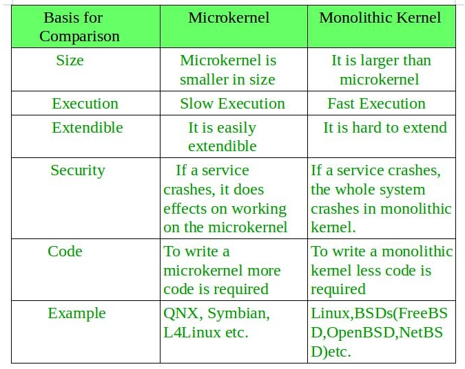

Apart from microkernel, Monolithic Kernel is another classification of Kernel. Like microkernel this one also manages system resources between application and hardware, but user services and kernel services are implemented under same address space. It increases the size of the kernel, thus increases size of operating system as well.
This kernel provides CPU scheduling, memory management, file management and other operating system functions through system calls. As both services are implemented under same address space, this makes operating system execution faster.
Below is the diagrammatic representation of Monolithic Kernel:

If any service fails the entire system crashes, and it is one of the drawbacks of this kernel. The entire operating system needs modification if user adds a new service.
Advantages of Monolithic Kernel –
- One of the major advantage of having monolithic kernel is that it provides CPU scheduling, memory management, file management and other operating system functions through system calls.
- The other one is that it is a single large process running entirely in a single address space.
- It is a single static binary file. Example of some Monolithic Kernel based OSs are: Unix, Linux, Open VMS, XTS-400, z/TPF.
Disadvantages of Monolithic Kernel –
- One of the major disadvantage of monolithic kernel is that, if anyone service fails it leads to entire system failure.
- If user has to add any new service. User needs to modify entire operating system.
Key differences between Monolithic Kernel and Microkernel –
